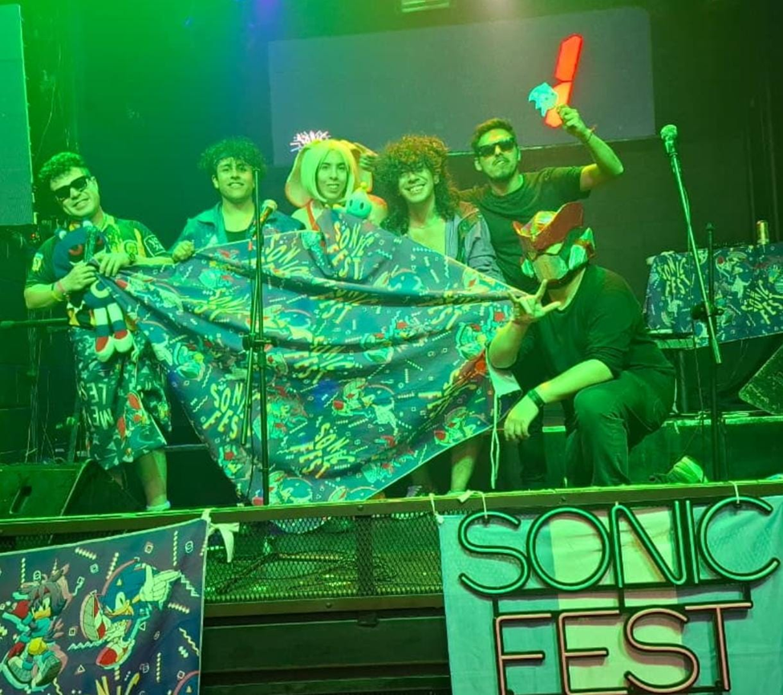

🇦🇷 SONIC FEST es el evento de fans de Sonic más grande de Argentina, organizado por y para la comunidad en Buenos Aires.
Combinamos fiestas nocturnas temáticas +18 con convenciones familiares "Sonic Expo Fest", creando experiencias únicas llenas de velocidad, nostalgia y pasión por el erizo azul.

En boliches icónicos con DJ sets temáticos, mashups de Crush 40, visuales LED, cosplay, sorteos y ambientación inspirada en los juegos.
Convenciones familiares con stands, torneos, trivias, regalos y actividades para grandes y chicos.
⚡ SONIC FEST - 24 ENERO 2026
Casa Colombo • +18 • Con The Badniks en vivo
Seguinos en:
WEB •
INSTAGRAM •
YOUTUBE
🛡️ Todos los eventos cuentan con seguridad profesional, guardarropas y políticas claras para un ambiente seguro y respetuoso.